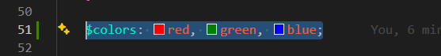
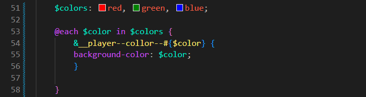
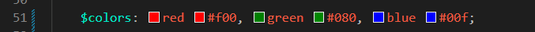
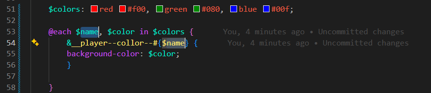

@each_loop
Intro
Agora iremos aprender como utilizar o @each. Continuaremos utilizando a mesma estrutura das aulas anteriores para facilitar o entendimento.
Agora iremos aprender como utilizar o @each. Continuaremos utilizando a mesma estrutura das aulas anteriores para facilitar o entendimento.
Iremos utilizá-lo para criar modificadores de cores. Para isso, precisaremos de uma coleção de dados que pode ser armazenada em uma variável. Chamaremos essa variável de $colors.
Em seguida, adicionaremos todas as cores que precisamos,
ficando da seguinte forma:

Agora iremos adicionar nosso
@each.
Assim como o @for, ele também possui
uma estrutura própria.
Nosso código ficará da seguinte forma:

Para facilitar o entendimento, podemos compará-lo a um loop que percorre uma lista de valores.
Em resumo, o @each percorre todos os valores armazenados em uma coleção e executa as regras definidas para cada item encontrado.
Agora vamos supor que, em vez de armazenar apenas o nome
da cor, desejamos armazenar também seu valor hexadecimal.
Nesse caso, nossa variável
$colors
ficará da seguinte forma:

Agora cada item possui dois valores: um nome e um código
hexadecimal.
Por isso, precisaremos utilizar duas variáveis dentro do
@each, uma para cada valor.
O código ficará semelhante ao exemplo abaixo:

Dessa forma, o Sass consegue acessar separadamente o nome da cor e seu valor hexadecimal para gerar os estilos automaticamente.
Conteúdo da aula